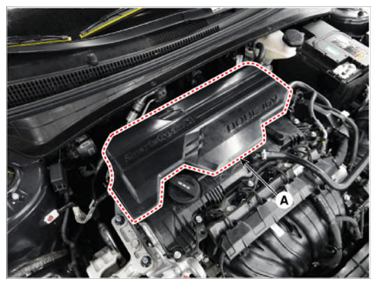

Removal and Installation
WARNING: This page is about a different variant/trim than selected.
- Remove the engine cover (A).
 Courtesy of HYUNDAI MOTOR AMERICA
|
NOTE:
- Lift up the lower end of engine cover, then left and right alternately.
- When installing, confirm that the mounting rubber insulators has been installed.
- allowed the engine to warm up to 80~95 temperature and stop engine
- Install in the reverse order of removal.